Все компоненты — было → стало
Цвет #3f238b, кнопки без «пилюль». Одни правила на всё; скрытое открыто кликом. 24 мест.
Тиры
Tier 1 — #3f238b, Tier 2 и 3 — тот же цвет темнее к чёрному, текст белый.
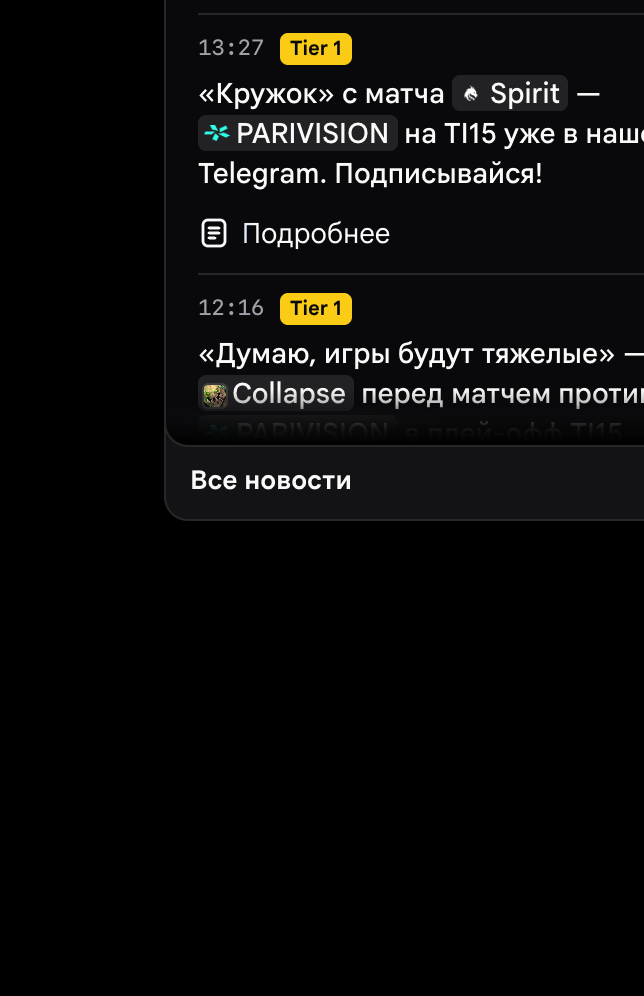
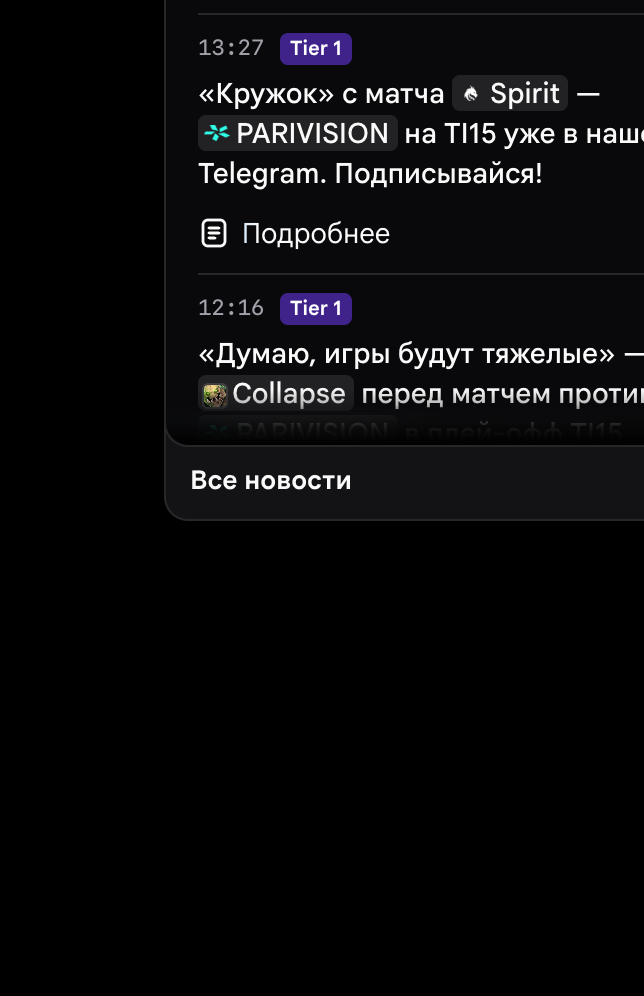
Был цветной текст без подложки. Тёмно-фиолетовый текст не читается, поэтому теперь метка, как везде.


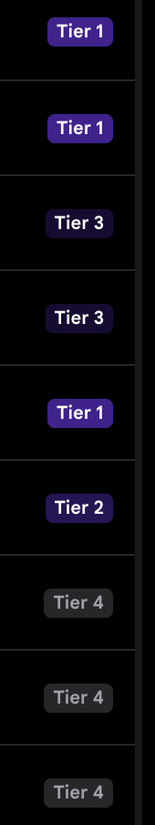
Был белым.


Шапка и баллы
Замок — плашка #3f238b. Жёлтый замок «Зарезервировано» в раскрытом — серым. Монета 1 240 — вопрос #22.
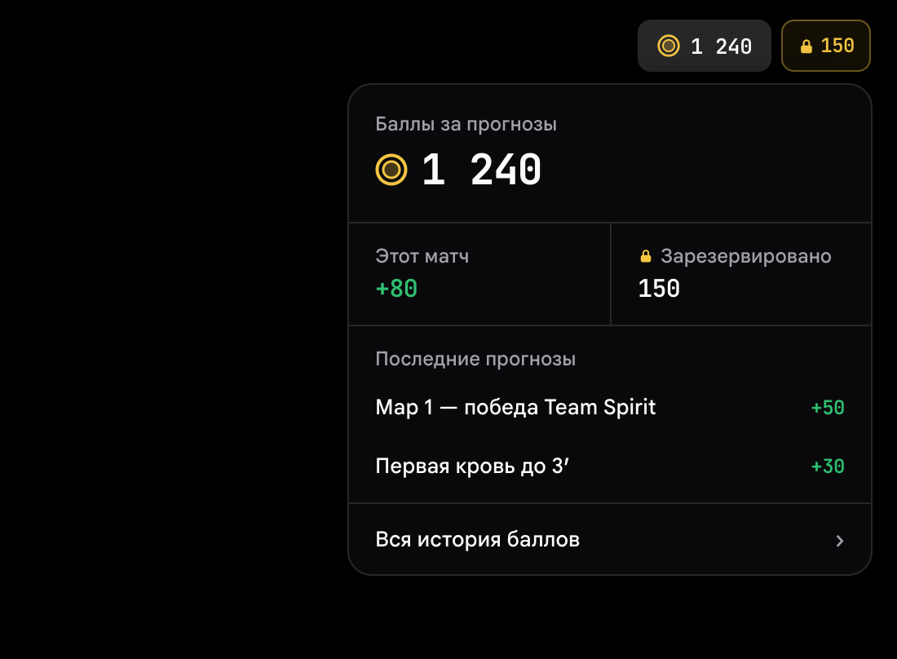
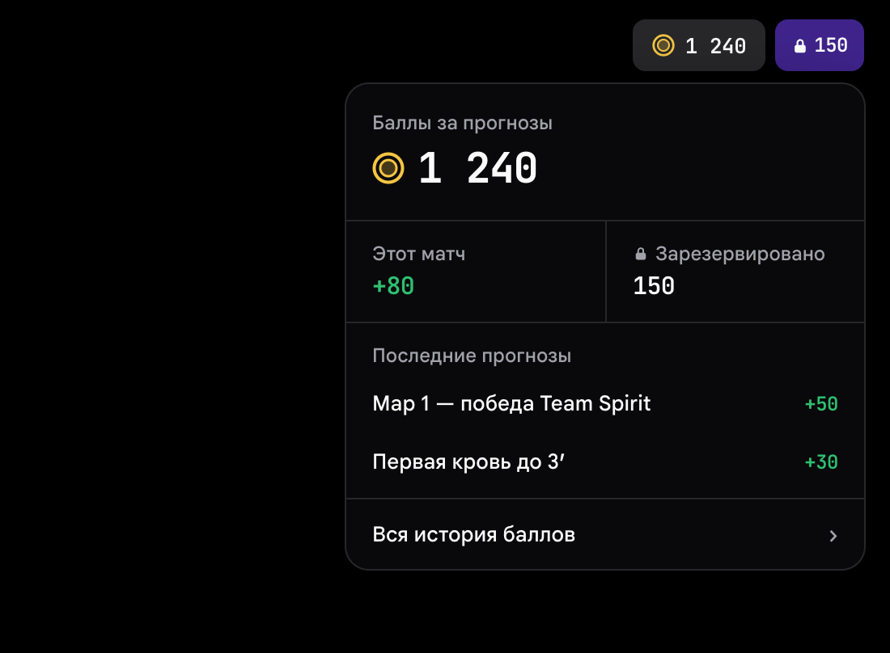
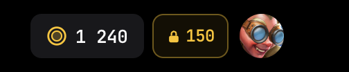
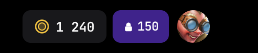
Прогнозы
«Новый» — плашка, бегущая рамка — фиолетовая.
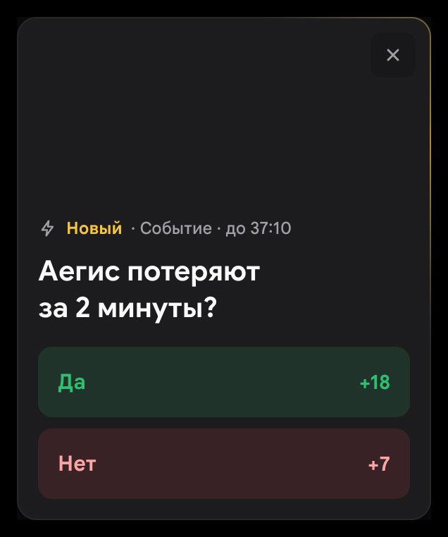
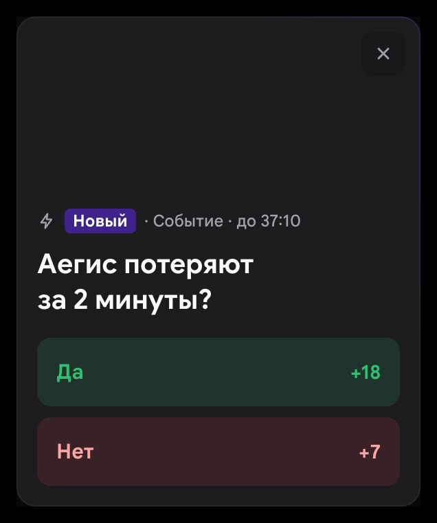
Точка ожидания — фиолетовая.
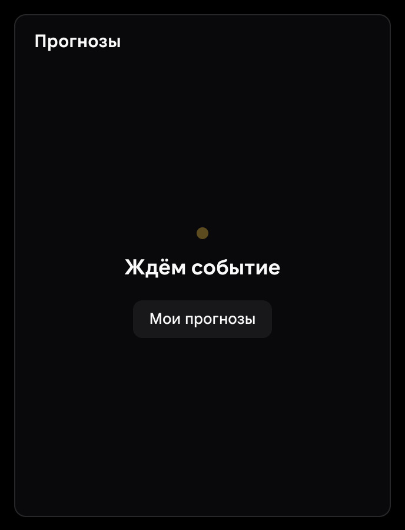

+20 — белым. Если баллы оставляем жёлтыми (#22) — вернём.

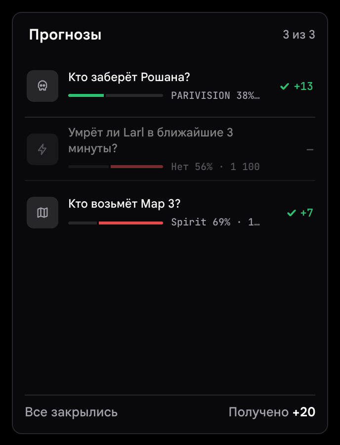
Кнопки
Белая → #3f238b. Фокус — как был.
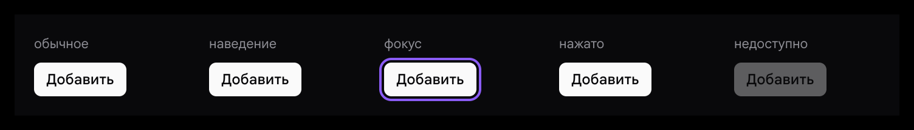

Был «пилюлей» — стал прямоугольным, скругление 6, как у кнопки того же размера.
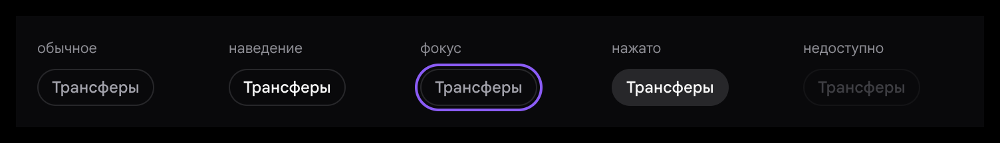

Те же чипы — прямоугольные.
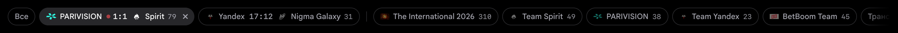
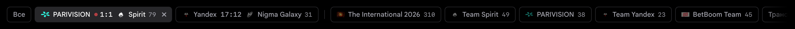
Белая «пилюля» → #3f238b, прямоугольная.
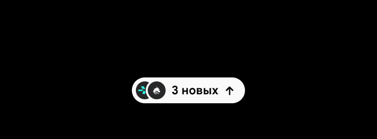
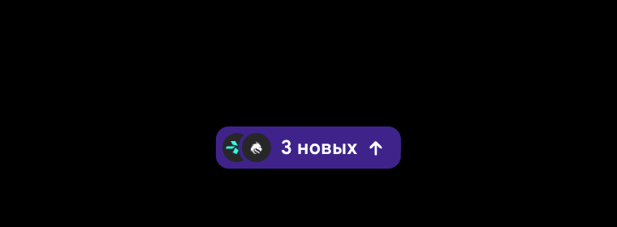
Белая «пилюля» → #3f238b, прямоугольная.


Выбранное — «чёрный поднятый»
Выбранные были белыми — стали серыми, как «Все» в фильтре.
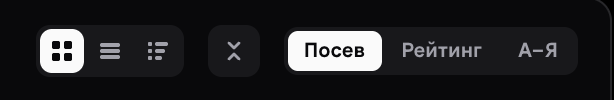
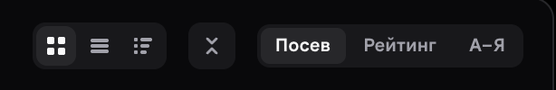
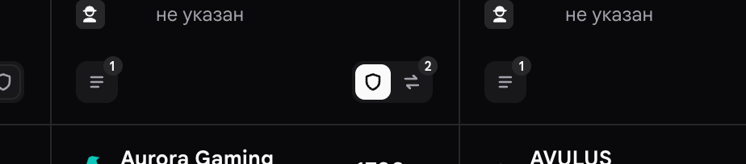


Прочее
Кнопка — главная, #3f238b. Звезда «Редакция» здесь уже серая.
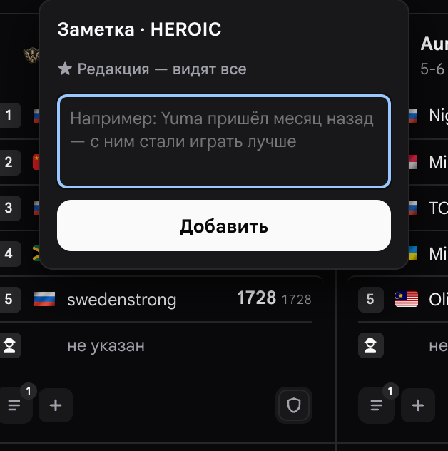
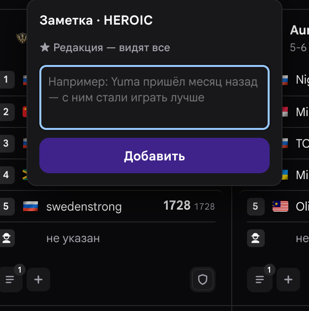
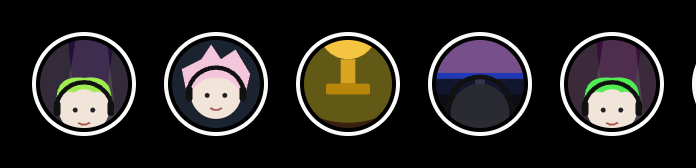
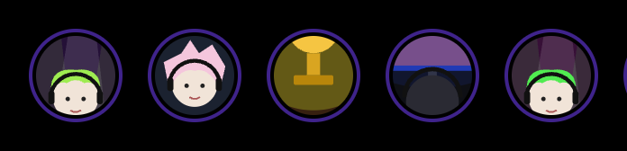
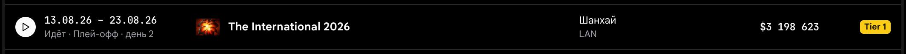

Вопрос не меняю без твоего слова
Баллы портала. Если это тоже «золото» — оставляю жёлтыми, иначе монеты — фиолетовые.
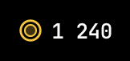

Событие игры, не акцент. Предлагаю оставить.
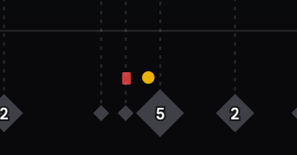
Цвета позиций, как на Cyberscore. Керри — индиго, похож на акцент. Предлагаю оставить.
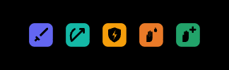
Ещё
- Счётчик заметок редакции (жёлтый) и «2-1-1» в подписи команды не снялись: в историях их нет на экране. Правило то же — счётчик плашкой #3f238b, «2-1-1» серым.
- fyi: у поля заметки рамка фокуса голубая (на скрине «Добавить»). Акцент или нет — скажи.
- Охват: 6 страниц демо, все 333 истории Storybook
ui/, лабы-концепты (турниры, расписание, главная). Не проверял: телефон и наведение.